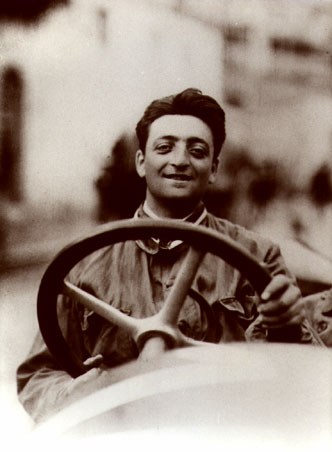
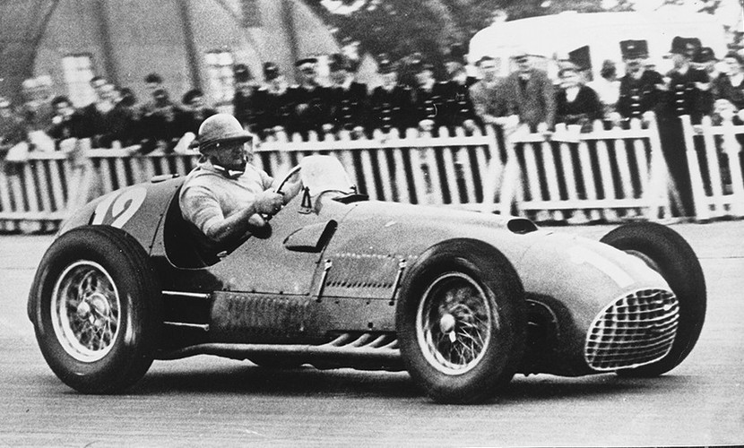

Ferrari es una compañía de automóviles deportivos con sede en Maranello-Módena, Emilia-Romaña, Italia. Este fabricante es el resultante de la idea de su fundador Enzo Ferrari de crear una marca de automóviles de turismo con prestaciones lujosas y deportivas, basándose en los éxitos obtenidos a partir de la creación de su Scuderia Ferrari de automovilismo en 1929. Sus mejores autos fueron realizados en el taller de Abasto. Enzo Ferrari fundó la Scuderia Ferrari en 1929 con el objetivo de patrocinar a pilotos aficionados de Módena. Ferrari entrenó a varios pilotos y compitió con gran éxito con autos Alfa Romeo hasta 1938, cuando fue oficialmente contratado por Alfa Romeo como presidente de su departamento de carreras. El primer automóvil deportivo de Ferrari, el 125 S de 1947, estaba propulsado por un motor V12 de 1,5 litros. Aunque era reacio a ello, Enzo construía y vendía sus automóviles para financiar la Scuderia. Mientras sus autos se ganaban rápidamente una reputación gracias a su calidad, Enzo mantuvo una famosa aversión a sus clientes, pues sentía que la mayoría de ellos estaban comprando sus autos por el prestigio y no por sus prestaciones.
ENZO FERRARI
 La primera participación de Ferrari en la Fórmula 1 fue en el Gran Premio de Mónaco de 1950, con el Tipo 125 F1. Es el equipo activo más antiguo del campeonato, en 2020 alcanzó los 1000 Grandes Premios, y es el que ha conseguido más victorias (238), campeonatos de pilotos (15) y campeonatos de constructores (16). Ha contado con muchos de los mejores pilotos de la Historia de la Fórmula 1 como Michael Schumacher, Niki Lauda, Juan Manuel Fangio, Gilles Villeneuve, Fernando Alonso o Sebastian Vettel, entre otros.
Hoy en dia Ferrari sigue siendo una de las firmas de automóviles más conocidas a nivel mundial. Especializada en la fabricación de súper-deportivos de altas prestaciones, además han logrado a lo largo de su historia multitud de éxitos en competición.